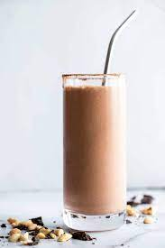

Post workout recovery shake

A very simple, yet very tasty and effective post workout meal.
Ingredients:
- 200ml of whole milk
- 200ml of water
- 30g of your preferred protein powder
- 1 medium banana
- 5 almonds
- Optional: a sprinkle of cinnamon powder
Steps:
- Place the liquid ingredients on a blender, followed by the dry ingredients
- Cut the banana into manageable pieces before blending
- Blend until everyting becomes smooth and consitent
- Serve on a large cup